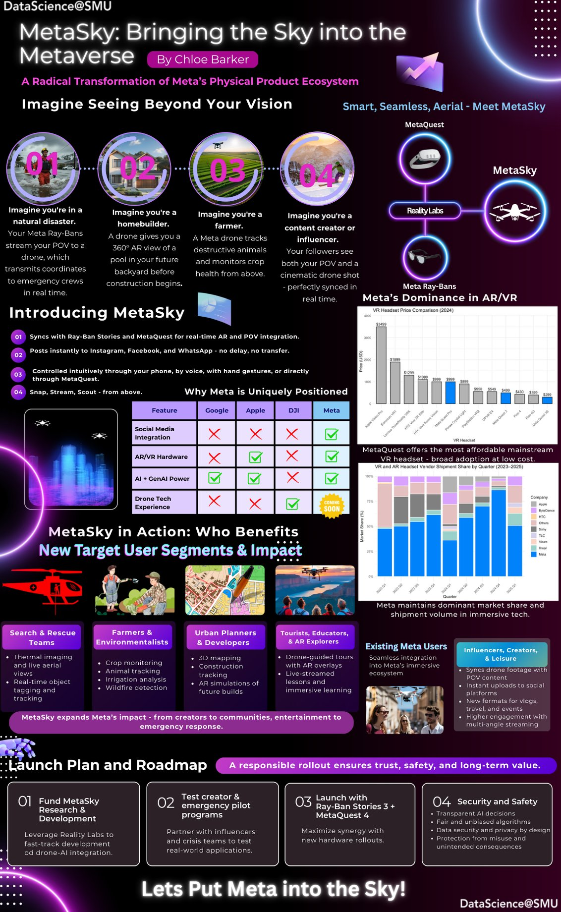

MetaSky: Bringing the Sky into the Metaverse
A product-concept infographic and pitch deck imagining what Meta could build by combining its social platforms, AR/VR hardware, and AI with consumer drone technology, designed for a data storytelling course to practice turning a technical concept into a visual pitch a general audience can follow.

What if Meta built a drone that talked to everything else it owns?
MetaSky imagines a consumer drone designed to sync with Meta's existing ecosystem, Ray-Ban Stories smart glasses and MetaQuest headsets, streaming a first-person view alongside a cinematic aerial shot in real time, then posting straight to Instagram, Facebook, and WhatsApp with no separate transfer step. Controlled by phone, voice, hand gesture, or MetaQuest directly.
The one gap in an otherwise complete ecosystem
The pitch's core argument is competitive positioning: Meta already leads on social integration, AR/VR hardware, and AI, DJI leads only on drone hardware. MetaSky is framed as the missing piece that would let Meta compete directly in a category it currently has no presence in.
| Feature | Apple | DJI | Meta | |
|---|---|---|---|---|
| Social Media Integration | ✗ | ✗ | ✗ | ✓ |
| AR/VR Hardware | ✗ | ✓ | ✗ | ✓ |
| AI + GenAI Power | ✓ | ✓ | ✗ | ✓ |
| Drone Tech Experience | ✗ | ✗ | ✓ | — (proposed) |
Market context cited in the original presentation
The competitive landscape cited in the deck is real, drawn from Statista and VRcompare: existing DJI drone pricing and Meta's current position in the AR/VR headset market.
Four very different users, one platform
Search & rescue teams
Thermal imaging and live aerial views, with real-time object tagging and tracking for emergency response.
Farmers & environmentalists
Crop monitoring, animal tracking, irrigation analysis, and wildfire detection from above.
Urban planners & developers
3D mapping, construction tracking, and AR simulations of a future build before it exists.
Creators & influencers
Drone footage synced with POV content for instant, multi-angle uploads across every Meta platform.
A deliberately staged rollout
The pitch proposes a staged rollout with privacy and safety requirements. These are concept-stage recommendations, not implemented product capabilities.